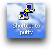
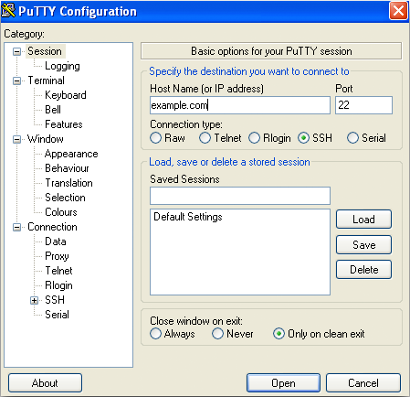
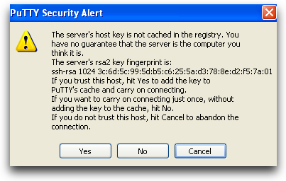

How To Use Putty
- Double-click on the putty.exe program or the desktop shortcut to launch the application.
- Enter your connection settings: ex(172.168.xx.xx)
- Port: 22 (leave as default)
- Connection Type: SSH (leave as default)
- Click Open to start the SSH session.
- If this is your first time connecting to the server from this computer, you will see the following output. Accept the connection by clicking Yes.
- Once the SSH Connection is open, you should see a terminal prompt asking for your username:
- login as
- Using keyboard-interactive authentication.
- Password:
- You are now logged into your server with SSH. You should see output like this: Input command: show logg


